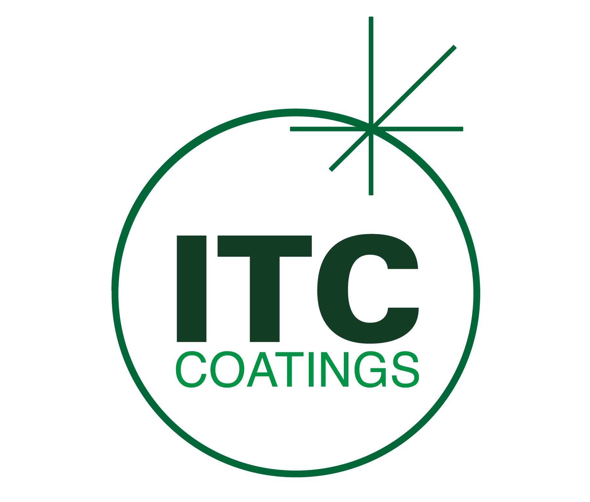

Molten iron breakouts through steel shell vessels are among the most dangerous events in iron foundries and steel mills -- causing serious injuries, equipment destruction, and costly production losses. Despite the fact that the steel shell's melting point is at least 300°F higher than the molten iron it contains, breakouts happen with alarming frequency. ITC Coatings' ceramic barrier coating eliminates the root cause of these failures.

The Iron-Iron Carbide phase diagram showing how carbon diffusion lowers the melting point of steel
Intuitively, molten iron should solidify when it contacts a steel shell -- after all, the shell is cooler and has a higher melting point. But breakouts are not driven by temperature alone. They're driven by carbon diffusion.
When high-carbon molten iron penetrates the refractory lining and contacts the low-carbon steel shell, carbon rapidly diffuses from the iron into the steel. This changes the composition of the steel at the contact point, lowering its melting point to the iron-carbon eutectic -- dramatically below the original melting point of the steel shell.
This is shown in the Iron-Iron Carbide (Fe-Fe₃C) phase diagram: as carbon content increases in the steel, the melting point drops sharply toward the eutectic point. The result is that the molten iron essentially dissolves the steel shell from the inside, creating the conditions for a breakout.
What starts as a relatively minor problem -- a hot spot on the shell or a plate stuck during tear-out -- can rapidly escalate into a full breakout of molten iron, with catastrophic consequences.
The potential for molten iron breakouts can be minimized by applying a ceramic coating on the inside of the steel shell prior to installing the refractory lining. The coating creates a physical barrier that prevents molten iron from making direct contact with the steel.
Without contact, there is no carbon diffusion. Without carbon diffusion, the steel shell retains its original melting point. The reaction becomes driven by temperature alone -- and since the shell temperature is well below the iron's solidification point, the iron freezes against the coating and remains in place as a solid skull until the next lining tear-out.
The key to stopping a breakout is threefold:
As long as the ceramic coating can withstand the temperature of the molten iron, it will contain it until the iron solidifies. Once solidified, there will never be enough localized heat energy to re-melt it -- the steel shell acts as a massive heat sink that absorbs energy faster than the iron can replace it.
The ceramic coating also provides a secondary benefit: it acts as a thermal barrier that reduces heat loss and improves the heat storage capacity of the refractory lining, increasing the vessel's residence time.
Depending on the specific coating characteristics, the material can be sprayed or brushed onto the interior steel shell. It is recommended that the shell be heated slightly to facilitate adhesion and the coating process.
Any vessel that contains molten iron against a steel shell is vulnerable to carbon diffusion breakouts:
Molten iron breakouts cause:
A ceramic coating applied during routine reline is a low-cost preventive measure compared to the human and financial cost of a single breakout event. This is not just an efficiency improvement -- it is a safety-critical application.
For iron foundries, steel mills, and any operation handling molten iron in steel-shell vessels, ITC's ceramic coating provides a proven barrier against breakouts. Contact ITC Coatings to discuss breakout prevention for your vessels.
ITC Coatings has been engineering high-temperature ceramic coating solutions for the iron and steel industry since 1980. Our coatings protect refractory linings, metal substrates, and -- most importantly -- people. Based in San Angelo, Texas.
Ready to reduce your energy costs and extend refractory life?
Email: info@itccoatings.com
Phone: (325) 340-1304
Web: itccoatings.com